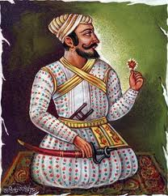
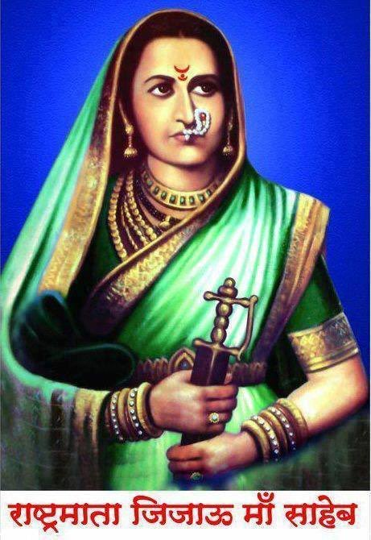
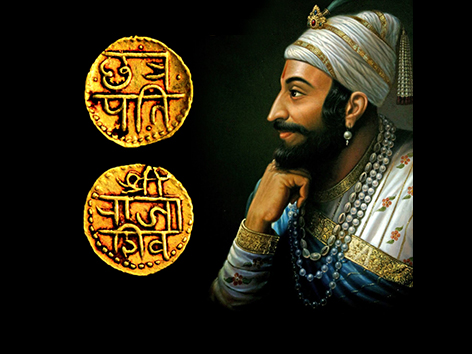
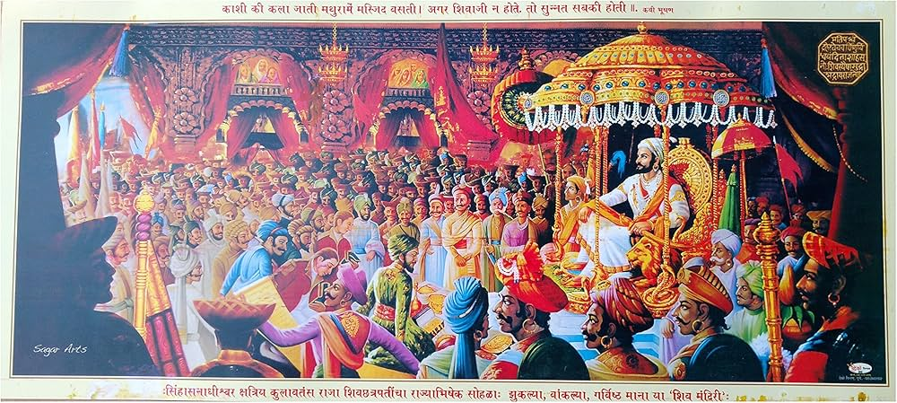
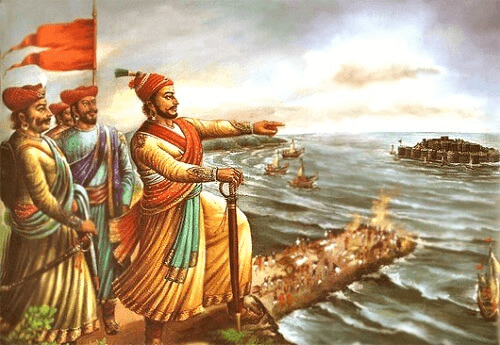
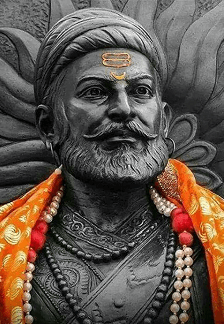
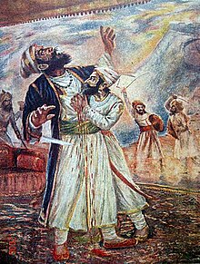
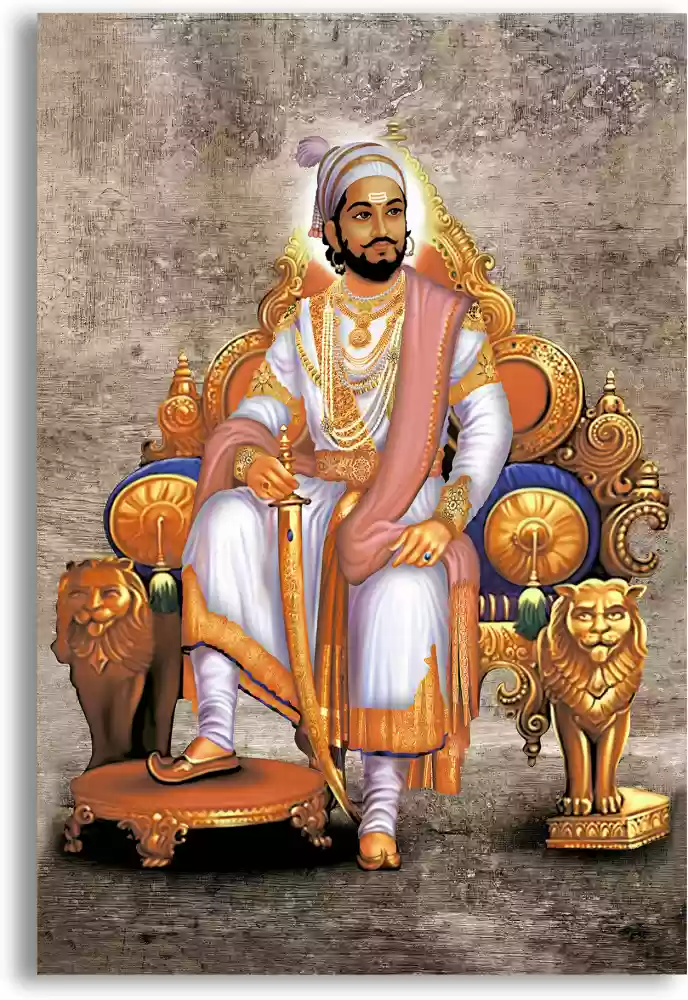

Shivaji (born February 19, 1630, or April 1627,
Shivner, Poona [now Pune], India-died April 3, 1680, Raigad) was
an individual who opposed the Mughal dynasty and founded the Maratha
kingdom in 17th-century India. His kingdom’s security was based on
religious toleration and on the functional integration of Brahmans,
Marathas, and Prabhus.
Chatrapati Shivaji Maharaj was the founder of the Maratha Empire
in western India. He is considered to be one of the greatest warriors
of his time and even today, stories of his exploits are narrated as a part of the folklore. With his valor and great administrative skills, Shivaji carved out an enclave from the declining Adilshahi sultanate of Bijapur. It eventually became the genesis of the Maratha Empire. After establishing his rule, Shivaji implemented a competent and progressive administration with the help of a disciplined military and well-established administrative set-up. Shivaji is well-known for his innovative military tactics that centered around non-conventional methods leveraging strategic factors like geography, speed, and surprise to defeat his more powerful enemies.
Shivaji’s father Shahaji was in service of the Bijapuri Sultanate - a tripartite association between Bijapur, Ahmednagar, and Golconda, as a general. He also owned a Jaigirdari near Pune. Shivaji’s mother Jijabai was the daughter of Sindkhed leader Lakhujirao Jadhav and a deeply religious woman. Shivaji was especially close to his mother who instilled in him a strict sense of right and wrong. Since Shahaji spent most of his time outside of Pune, the responsibility of overseeing Shivaji’s education rested on the shoulders of a small council of ministers which included a Peshwa (Shamrao Nilkanth),a Mazumdar (Balkrishna Pant), a Sabnis (Raghunath Ballal), a Dabir (Sonopant) and a chief teacher (Dadoji Konddeo). Kanhoji Jedhe and Baji Pasalkar were appointed to train Shivaji in military and martial arts. Shivaji was married to Saibai Nimbalkar in 1640.
Parents Of Shivaji Maharaj
||..Shahaji Maloji Bhosle..||

Shahaji Bhonsale (Marathi pronunciation: 18 March 1594 – 23 January 1664) was a 17th century Indian military leader who served the Ahmadnagar Sultanate, the Bijapur Sultanate, and the Mughal Empire at various points in his career. As a member of the Bhonsle dynasty, Shahaji inherited the Pune and Supe jagirs (fiefs) from his father Maloji, who previously served the Ahmadnagar Sultanate. During the Mughal invasion of the Deccan, Shahaji joined the Mughal forces and served under Emperor Shah Jahan for a short period. After being deprived of his jagirs, he defected to the Bijapur Sultanate in 1632 and regained control over Pune and Supe. In 1638, he received the jagir of Bangalore after Bijapur's invasion of Kempe Gowda III's territories. Afterwards, he became the chief general of Bijapur and oversaw its expansion.
Shahaji brought the house of Bhosale into prominence and was the father of Shivaji, the founder of the Maratha Empire. In the 19th and 20th centuries, the princely states of Tanjore, Kolhapur, and Satara were ruled by Shahaji's descendants.
||..Jijabai Shahaji Bhosle..||

Jijabai Shahaji Bhonsale (née Jadhav; 12 January 1598 – 17 June 1674), referred to as Rajmata Jijabai, was the mother of Chattrapati Shivaji, founder of the Maratha Empire.She was a daughter of Lakhujirao Jadhav of Sindkhed Raja.
Jijabai was born on 12 January 1598, to Mhalasabai Jadhav and Lakhuji Jadhav at Sindkhed Raja in present-day Buldhana district of Maharastra. Jijabai was married at an early age to Shahaji Bhosle, son of Maloji Bhosle of Verul village, a military commander serving under the Nizam.
She died on 17 June 1674 at Pachad village near Raigad Fort. This was only eleven days after the coronation of Chatrapati Shivaji Maharaj.
Personality Of Shivaji Maharaj
The weight of Shivaji Raje Bhosale
Shivray donated gold equivalent to his weight during the coronation of Shivaji Raje. According to Britisher Henry Oxyn Dane’s records, the weight of Maharaj was 160 pounds (73 kg).
But it’s necessary to deduct the clothes weight, ornaments, weapons (sword, a dagger). He had also held a graven idol of Lord Vishnu. We subtract that unnecessary weight and concluded his weight would probably be 145 pounds (66 kg).
Height of Shivaji Raje Bhosale
Some historians believe that the height of Shivaji Raje was about 168 cm (5 ft, 6 inches). This height is an approximate calculation from the descriptions, paintings, coin inscriptions (if any), and other evidences.
The Great Marathas

Maratha, a major people of India, famed in
history as yeoman warriors and champions of Hinduism. Their
homeland is the present state of Maharashtra, the Marathi-
speaking region that extends from Mumbai (Bombay) to Goa along
the west coast of India and inland about 100 miles (160 km) east
of Nagpur.
The term Maratha is used in three overlapping senses: within
the Marathi-speaking region it refers to the single dominant
Maratha caste or to the group of Maratha and Kunbi (descendants
of settlers who came from the north about the beginning of the
1st century CE) castes; outside Maharashtra, the term often
loosely designates the entire regional population speaking the
Marathi language, numbering some 80 million; and, used historically,
the term denotes the regional kingdom founded by the Maratha leader
Shivaji in the 17th century and expanded by his successors in the
18th century.
The Maratha group of castes is a largely rural class of peasant
cultivators, landowners, and soldiers. Some Maratha and Kunbi
have at times claimed Kshatriya (the warrior and ruling class)
standing and supported their claims to this rank by reference to
clan names and genealogies linking themselves with epic heroes,
Rajput clans of the north, or historical dynasties of the early
medieval period. The Maratha and Kunbi group of castes is divided
into subregional groupings of coast, western hills, and Deccan
Plains, among which there is little intermarriage. Within each
subregion, clans of these castes are classed in social circles of
decreasing rank. A maximal circle of 96 clans is said to include
all true Maratha, but the lists of these 96 clans are highly
varied and disputed.
1st Coronation Of Chhatrapati Shivaji Mararaj

Shivaji Maharaj was crowned as the king on June 6,
1674 which marked the beginning of Hindavi Swarajya in India. This historic
day is celebrated as Shivrajyabhishek day at Chhatrapati Shivaji Maharaj's
Raigarh Fort. The day is also known as Rajyabhishek Sohala or Shivrajyabhishek Sohala.
About 5,000 devotees attended the 2022 celebration. This important day commemorates the
great Maratha King – Chhatrapati Shivaji Maharaj. Shivrajyabhishek Din is celebrated
annually on June 6 with great joy, pride and enthusiasm. Shivrajyabhishek Sohala is
celebrated to mark the beginning of Shivaji Maharaj’s road to shaping the Maratha Empire.
Chatrapati Shivaji Maharaj took over as king in highly challenging times, and his zeal,
resilience, and bravery shaped the Maratha empire into a brave and prosperous empire that
was respected, loved, and feared by many.
Greatness Of Chhatrapati Shivaji Mararaj
Though there have been many great kings in India, Shivaji had some great qualities, which make him stand above the rest.
Shivaji was both founder and builder of the Maratha Kingdom. He carved a kingdom out of nothing. What he had initially was a very small jagir and a few men who were ready to die for him, which was nothing compared to the Sultanates of Delhi and Bijapur.
Apart from being a great warrior, he was a great administrator. He took many decisions to comfort farmers and common people. He had given strict orders to his officers to not take anything forcefully from common people. All the soldiers and officers were strictly warned of severe punishment if they harm women and/or children, either from Swarajya or those from enemy territory.
King Shivaji proclaimed himself as “Go-Brahman Pratipalak” (Protector of cow and Brahmins) and tried his best to do so. He paid a lot of attention to the navy, which other kings in India did not, and built a few sea forts and warships to protect the seashore. He and his son Sambhaji were considered incarnations of God at that time by the people of Maharashtra.
Once Shivaji’s brother-in-law (wife’s brother) Bajaji Nimbalkar, had converted to Islam but wanted to return to Hinduism. At that time, it was nearly impossible to convert back to Hinduism because the Hindu society did not use to accept such persons and the priests were also opposing the idea. But Shivaji insisted and made the priests find the ritual within Hindu Dharma to get reconverted. I am not sure but I think it was the first case of its kind. In the same way, his commander-in-chief, Netaji Palkar, was taken back to Hinduism after some years.
Hindu priests used to believe that there would not be any Hindu Kingdom after the fall of the Vijayanagar empire but Shivaji proved them wrong and established the Hindu Kingdom, which lasted till the 19th century.
Legends About Chhatrapati Shivaji Maharaj
1. It was a rumor that Shivaji was a phantom and could appear at many places at the same time.
2. King Shivaji was gifted a divine Shiva Linga called Chandrashekhar Baan by a saint. It was said that one who worships it for 12 years, used to get sovereignty.
3. Shrigund – Near the Walakeshwar sea, there was a round hole in a hill. It was said that one who passes through it successfully, gets successful in life. Shivaji passed this hole easily.
4. After the death of King Shivaji and King Sambhaji, Aurangzeb won Raigad Fort and vandalized Shivaji’s throne but some people believe the original throne was moved before and the duplicate was vandalized. The original throne is still lying somewhere in Maharashtra. It is worth millions of rupees.
5. While returning from the second sack of Surat, a large portion of loot could not reach back to Raigad due to an enemy attack and is still missing and values billions of dollars.
6. Some people believe that King Shivaji was murdered by poisoning. He was just 50 when he died and was in good health.
7. Both King Shivaji and his son Sambhaji Maharaj were voodooed by somebody.
8. Goddess Tulajabhavani gave him a divine sword, which is known as Bhavani Talwar. The sword is in Britain nowadays.
9. It is said that when Waghya (dog) saw Shivaji Maharaj’s body being cremated, he jumped into the burning pyre of Shivaji Maharaj.
Conflicts With Mugals
Due to Shivaji's disputes with the Bijapuri Sultanate and his unending victories, the Mughal Emperor Aurangzeb failed to notice him. Aurangzeb concentrated his efforts on eliminating the Maratha threat because he saw him as a threat to the spread of his highest goal. When Shivaji's army stormed and looted Mughal holdings near Ahmednagar and Junnar in 1957, conflicts erupted. Even so, Aurangzeb's counterattack was thwarted by the arrival of the stormy season and the struggle for advancement in Delhi. To stop Shivaji, Aurangzeb coordinated Shaista Khan, the governor of the Deccan and his maternal uncle. Shaista Khan sent off an enormous assault against Shivaji, catching a few fortresses under his influence and, surprisingly, his capital Poona. Shaista Khan was injured and expelled from Poona as a result of Shivaji's clandestine attack on him in response.
Later, Shaista Khan planned many raids against Shivaji, significantly weakening his position in the Konkan region. Shivaji went after Surat, a prominent Mughal trading centre, and took from the Mughal treasures to replenish his depleted treasury. A furious Aurangzeb sent Jai Singh I, his central general, and a horde of 150,000 people. The Mughal empire inflicted severe damage by invading Shivaji's castles, stealing their treasure, and then slaughtering the defenders. To save any additional casualties, Shivaji agreed to reach an understanding with Aurangzeb. On June 11, 1665, Shivaji and Jai Singh ratified the Treaty of Purandar. Shivaji agreed to hand over 23 fortresses and pay the Mughal Empire 400,000 as compensation. Shivaji was welcomed by Aurangzeb in Agra with the intention of using his strategic skills to unite the Mughal domains in Afghanistan. With his eight-year-old son Sambhaji, Shivaji travelled to Agra.
He was displeased with how Aurangzeb had treated him. He stormed out of court, and an indignant Aurangzeb imprisoned him at home. However, Shivaji eventually used his intelligence and cunning to escape the arrest. He pretended extreme ailment and set up containers of desserts to be shipped off sanctuary as contributions for supplication. On August 17, 1666, he escaped by disguising himself as one of the transporters and hiding his child inside one of the containers. In ensuing times, Mughal and Maratha threats were placated generally by consistent intercession through Mughal Sardar Jaswant Singh. Harmony endured till 1670, after which Shivaji jump-started a full-scale offence against the Mughals. He recuperated a large portion of his domains attacked by the Mughals in four months or less.
Military

Chhatrapati Shivaji Maharaj showed extraordinary expertise in making his tactical association, which went on until the destruction of the Maratha Empire. His system laid on utilizing his ground powers, maritime powers, and a series of strongholds across his domain. The Maval infantry filled in as the centre of his ground powers (built up with Telangi musketeers from Karnataka), upheld by Maratha cavalry. His mounted guns were moderately immature and dependent on European providers, further slanting him to an exceptionally versatile type of fighting.
Organization

Under his rule, the Maratha organization was laid out where Chhatrapati was the preeminent sovereign, and a group of eight clergymen were designated to regulate the legitimate requirement of different strategies. These eight priests revealed straightforwardly to Shivaji and were given a ton of force as far as the execution of strategies formed by the King.
These eight priests were -
1.The Peshwa, or Prime Minister, who oversaw the overall organisation and addressed the sovereign despite his absence, was the first of these eight priests.
2.The Majumder or the Auditor was liable for keeping up with the monetary soundness of the realm.
3.The PanditRao, or Chief Spiritual Head, was liable for supervising the profound prosperity of the kingdom, fixing dates for strict services and administering beneficent projects attempted by the ruler.
4.The Dabir or Foreign Secretary was dependent on the obligation of educating the ruler on issues concerning international strategies.
5.The Senapati, or Military General, was in charge of governing every aspect of the military, including recruitment, association, and warrior training. He likewise was the essential guide of the lord in the hour of a conflict.
Conflicts With Bijapur

Shivaji used to be a former vassal of the Adil Shahis but by the 1650s, he had become increasingly assertive, taking forts across the Konkan, and bringing under control large swathes of Adil Shahi territory. Given Afzal Khan’s success in the south, he was sent by the Sultan, with a mighty army, to subdue the Maratha icon.
The most famous use of the wagh nakh in history comes from the story of Afzal Khan’s killing by Shivaji. Khan was a general of Bijapur’s Adil Shahi Sultanate. According to legend, he was a fierce warrior and stood over 7 feet tall. After subjugating restive fiefs in the Sultanate’s southern regions, he was ordered to bring Shivaji to heel.
Khan marched into the Konkan and demanded a meeting with Shivaji. He said that the two should speak, one-on-one, in order to avoid unnecessary bloodshed and settle the issue. But Shivaji smelled treachery. Thus he went prepared to the meeting, wearing a chainmail under his robes and hiding a wagh nakh in his sleeve.
In the meeting, Khan, in the guise of embracing him, attempted to stab the Maratha leader. But Shivaji was protected by his armour and retaliated: the wagh nakh ripped out Khan’s guts. Khan would eventually be beheaded by one of Shivaji’s men and in the battle that followed, Shivaji’s army came out as victor.
Achivements Of Shivaji Maharaj

Chhatrapati Shivaji Maharaj ignited the fight for Swaraj (self-rule) and earned the title of 'guerrilla warfare pioneer. ' Known for building forts, he established a kingdom renowned for religious tolerance in a divided land. His powerful navy secured his maritime frontiers, challenging foreign dominance.